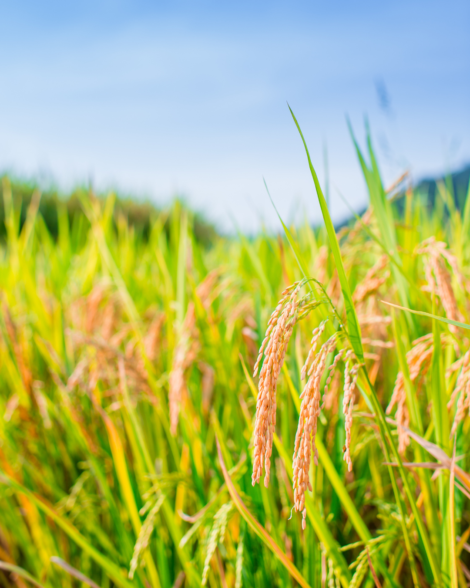
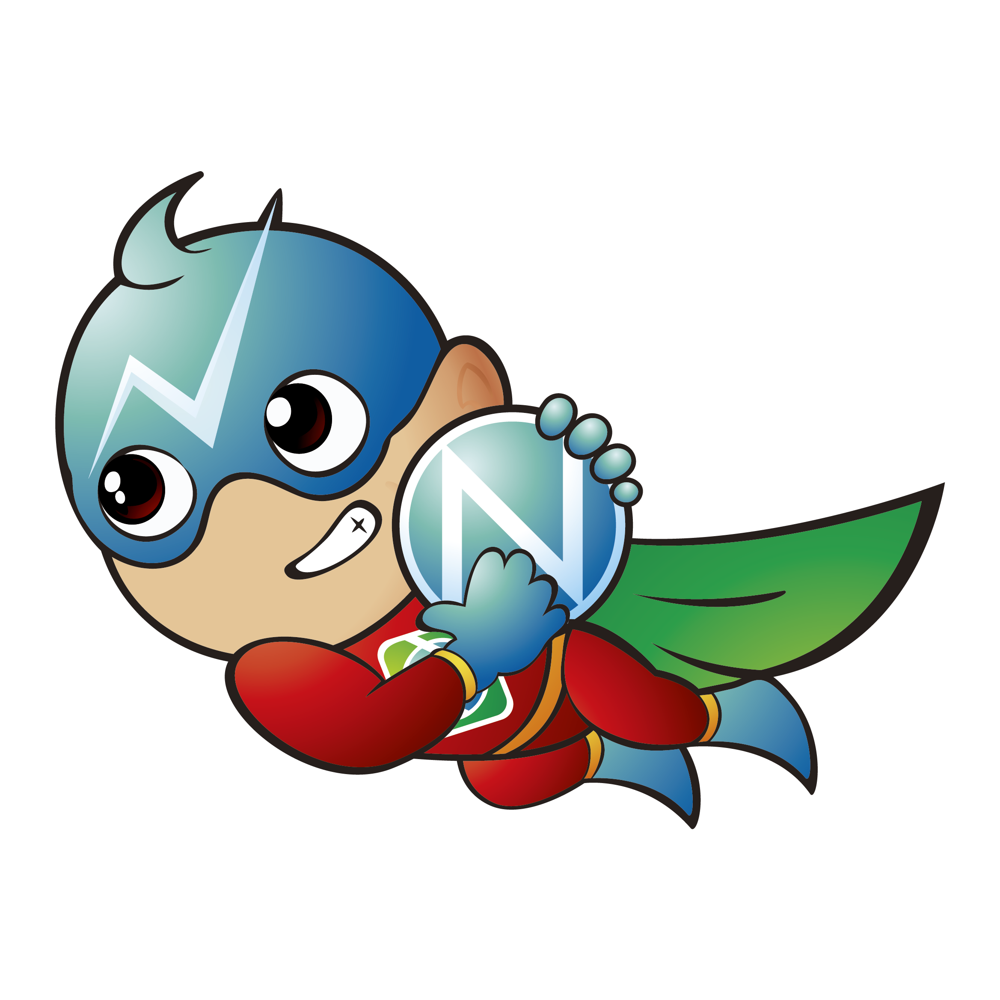
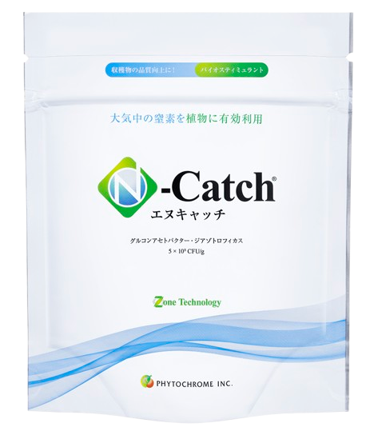
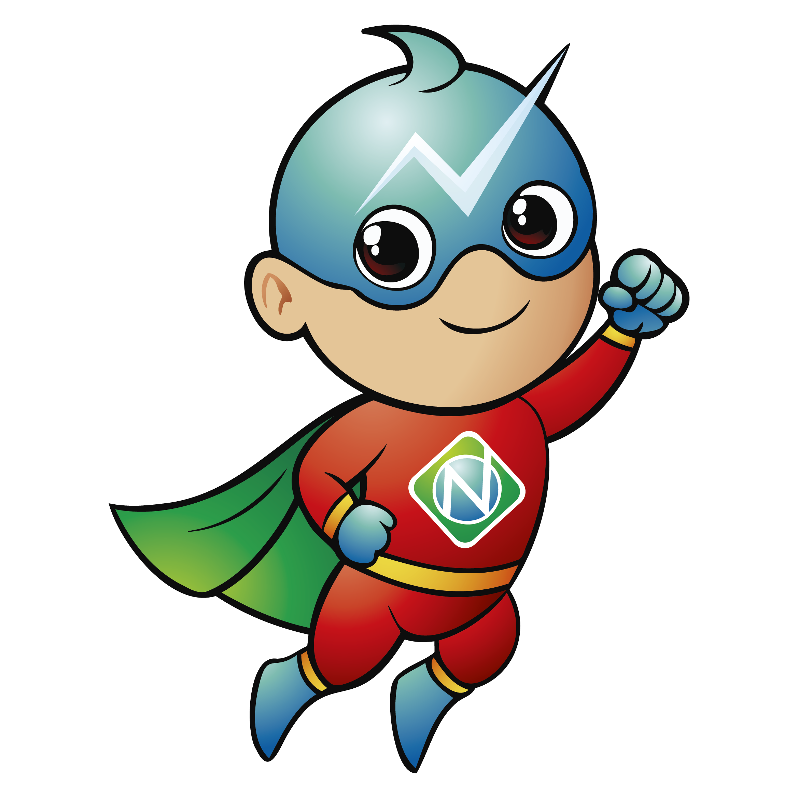

大気中の窒素を植物に有効活用し、根張りや光合成を後押しする微生物資材です。

夏場の高温ストレス対策に、信頼できる一手がほしい。
化学肥料の使い方を、そろそろ見直したい。
コストや手間は、できるだけ抑えたい。
バイオスティミュラント資材の種類が多すぎて、何を選んでいいか分からない。
そのお悩み、N-Catch が
新しい選択肢になります。
N-Catch（エヌキャッチ）は、「窒素固定」に着目した微生物資材です。 空気の約8割を占めるほど豊富にある窒素を、植物が活用しやすい形で支えます。
根張りや光合成といった生育の土台を後押しし、作物が本来もっている力を引き出します。 はじめての方でも取り入れやすい、扱いやすさも特長です。

サトウキビから発見・分離されたN-Catchの微生物。大気中の窒素を植物体内でアンモニア肥料に変換します。酷暑の季節の窒素不足（肥切れ）を微生物が解決。
水稲の場合は、なんと６．２５ｇのN-Catchで５０アール分の面積をカバー。育苗箱にじょうろで灌水すれば処理は完了。本圃での散布処理は不要だから、時間も手間もかからない。
2025年の実証試験では、35か所のテストの平均で、10アールあたり63kgの増収（玄米収量）が確認できました。倒伏やくず米も減って、各地から驚きの声が寄せられました。
空気中に豊富にある窒素を、微生物の力で植物が使える形へ。N-Catch が支える3つのステップ。
空気の８割を占める窒素ガス。これは植物には利用できないもの——それが従来の常識でした。
N-Catch の微生物が、植物と共生関係を作り、植物に足りない量だけを空気中の窒素から肥料に変換します。
植物が生育に活かし、根張りや光合成を収穫間際までサポートします。
公式ページから、気になる点をお気軽にご相談ください。
栽培環境や作物に合わせて、活用方法をご案内します。
全国のJA、農業資材販売店でお求めください。
